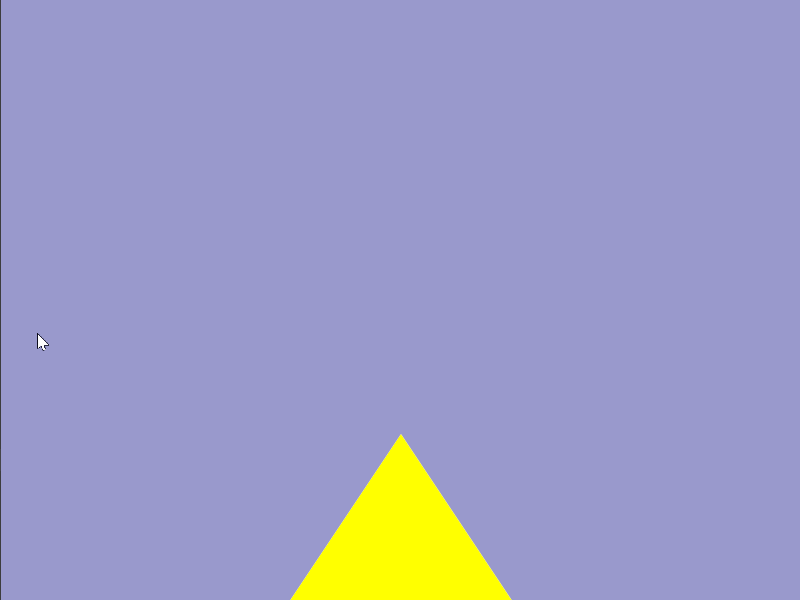
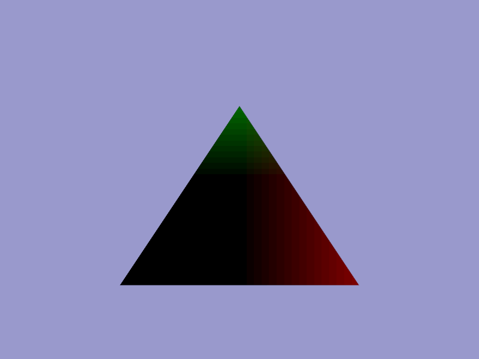

Shaders tell OpenGL how to draw, and we have a lot of creative opportunity to do interesting effects. We'll cover the what to draw, the geometry, in more detail in the following article.
Shaders are mini-programs that define a style of rendering. They are compiled, by a special shader compiler, and run on the specialised GPU (graphics processing unit). The GPU is built to do lots of floating point operations in parallel (at once). Many more than your CPU (central processing unit) can. You should look up the statistics for your particular GPU's float32 operations per second (flop/s), and compare that to your particular CPU model's flop/s to get a rough idea. Many of the tasks in computer graphics fall into the category of "embarrassingly parallel" problems:
It's also convenient to make use of lots of floating point numbers in these calculations. We can use them for positions in 3D, for the values of colours, for timers, and lots of in-between variables we make up ourselves like the intensity of lights in our scenes. You can see how the GPU hardware is going to be really useful here. Because the GPU can process many floating point instructions at once, you can guess why our shaders are designed to operate on only one item { vertex, fragment, etc. }, and not loop over all of them. We're trying to make the most use of the GPU's highly parallel architecture, and run as many things at once as we can. Thus, each vertex we position will invoke another vertex shader, each fragment will invoke another of our fragment shaders, and the GPU can schedule as much as possible to run in parallel.
Shaders are a way of re-programming the graphics pipeline. If we wanted to use a different colouring method for the cube in the image, or have an animated, spinning cube, we could tell OpenGL to switch to using a different shader program. The rendering process has several distinct stages of transforming a 3D object in a final 2D image. We call this staged process the graphics pipeline. All of the stages of the graphics pipeline that happen on the GPU are called the [programmable] hardware pipeline. Older OpenGL APIs had pre-canned functions like glLight() for driving the rendering model. We call this the fixed-function pipeline ("fixed" because it's not re-programmable). These functions no longer exist, and we have to write the lighting equations ourselves in shaders. In OpenGL 4 we can write a shader to control many different stages of the graphics pipeline:
A complete shader program comprises a set of separate shader (mini-programs) - one to control each stage. Each mini-program - called a shader by OpenGL - is compiled, and the whole set are linked together to form the executable shader program - called a program by OpenGL. Yes, that's confusing! If you look at the Quick Reference Card (or further down the page) you can see that the API differentiates functions into glShader and glProgram.
Each individual shader has a different job. At minimum, we usually have 1 vertex shader and 1 fragment shader per shader program, but OpenGL 4 allows us to use some optional shaders too.
Shader programs run on the GPU, and are highly parallelised. Each vertex shader only transforms 1 vertex. If we have a mesh of 2000 vertices, then 2000 vertex shaders will be launched when we draw it. Because we can compute each one separately, we can also run them all in parallel. Depending on the number of processors on the GPU, you might be able to compute all of your mesh's vertex shaders simultaneously.
| Release Date | GPU type | GPU cores / shading units |
|---|---|---|
| 2017 | GeForce GTX 1080 Ti | 3584 |
| 2022 | Radeon RX 7900 XTX | 6144 |
| 2022 | GeForce RTX 4090 | 16384 |
Because there is a lot of variation in user GPU hardware, we can only make very general assumptions about the ideal number of vertices or facets each mesh should have for best performance. Because we only draw one mesh at a time, keeping the number of separate meshes drawn per-scene to a low-ish level is often beneficial (reducing the batch count per rendered frame) - the idea is to keep as many of the processors in use at once as possible.
A pixel is a "picture element". In OpenGL lingo, pixels are the elements that make up the final 2D image that it draws inside a window on your display. A fragment is a pixel-sized area of a surface. A fragment shader determines the colour of each one. Sometimes surfaces overlap - we then have more than 1 fragment for 1 pixel. All of the fragments are drawn, even the hidden ones.
Each fragment is written into the framebuffer image that will be displayed as the final pixels. If depth testing is enabled it will paint the front-most fragments on top of the further-away fragments. In this case, when a farther-away fragment is drawn after a closer fragment, then the GPU is clever enough to skip drawing it, but it's actually quite tricky to organise the scene to take advantage of this, so we'll often end up executing many redundant fragment shader invocations.
OpenGL 4 shaders are written in OpenGL Shader Language version 4.00.9. The GLSL language from OpenGL versions 3 to 4 is almost identical, so we can port between versions without changing the code. OpenGL version 3.2 added a new type of shader: geometry shaders, and version 4.0 added tessellation control and tessellation evaluation shaders. These, of course, can not be rolled back to earlier versions. The first line in a GLSL shader should start with the simplified version tag:
#version 410 core
The different version tags are:
| OpenGL Version | GLSL Version | #version tag |
|---|---|---|
| 1.2 | none | none |
| 2.0 | 1.10.59 | 110 |
| 2.1 | 1.20.8 | 120 |
| 3.0 | 1.30.10 | 130 |
| 3.1 | 1.40.08 | 140 |
| 3.2 | 1.50.11 | 150 |
| 3.3 | 3.30.6 | 330 |
| 4.0 | 4.00.9 | 400 |
| 4.1 | 4.10.6 | 410 |
| 4.2 | 4.20.11 | 420 |
| 4.3 | 4.30.8 | 430 |
| 4.4 | 4.40.9 | 430 |
| 4.5 | 4.50.7 | 450 |
| 4.6 | 4.60.5 | 460 |
GLSL contains the operators in C and C++, with the exception of pointers. Bit-wise operators were added in version 1.30.
If you leave out the version tag, OpenGL falls back to an earlier default - it's always better to specify the version.
The most commonly used data types in GLSL are in the table below. For a complete list see any of the official reference documents.
| Data Type | Description | Common Usage |
|---|---|---|
| void | nothing | Functions that do not return a value |
| bool | Boolean value as in C++ | |
| int | Signed integer as in C | |
| float | Floating-point scalar value as in C | |
| vec3 | 3D floating-point value | Points and direction vectors |
| vec4 | 4D floating-point value | Points and direction vectors |
| mat3 | 3x3 floating-point matrix | Transforming surface normals |
| mat4 | 4x4 floating-point matrix | Transforming vertex positions |
| sampler2D | 2D texture loaded from an image file | |
| samplerCube | 6-sided sky-box texture | |
| sampler2DShadow | shadow projected onto a texture |
Each shader is written in plain text and stored as a character array (C string). It is usually convenient to read each shader from a separate plain text file. I use a file naming convention like this;
| font.vert | The vertex shader for my text rendering shader program. |
| font.frag | The fragment shader for my text rendering shader program. |
| particle.vert | The vertex shader for a particle system shader. |
| particle.geom | The geometry shader for a particle system shader. |
| particle.frag | The fragment shader for a particle system shader. |
Some coding text editors will do syntax highlighting for GLSL if you end with a ".glsl" extension. The GLSL reference compiler; Glslang can check your shaders for bugs if they end in ".vert" and ".frag".
GLSL is designed to resemble the C programming language. Each shader resembles a small C program. In Hello Triangle we wrote a very minimal shader program that has only a vertex shader and a fragment shader. Each of these shaders can be stored in a C string, or in a plain text file first, for convenience, and then loaded into a string. Let's start from a working Hello Triangle program, and modify it to add some new features.
Recall that our vertex shader has the job of positioning any one of the vertex points, from a vertex buffer, inside the view area. It does this by assigning a value to the built-in GLSL variable gl_Position. The viewing area is actually a 3D volume with dimensions -1 to 1 on the x, y, and z axes. This volume is called clip space, as any parts of geometry outside it will be "clipped" off, and not rendered.
We can make our vertex shader a little bit more fun by modifying our triangle's position. If we use the current time as a variable, we can animate this too. Let's modify our vertex shader, and add in a uniform for the current time. I wont add string quotes or line endings here. If you're not loading the shader from a file, you'll need to add that.
#version 410 core
in vec3 vertex_position;
uniform float time; // uniform is a keyword in GLSL
void main() {
vec3 pos = vertex_position;
pos.y += sin( time );
gl_Position = vec4( pos, 1.0 );
}
The input to a vertex buffer (the in variables) are called per-vertex attributes, and come from blocks of memory on the graphics hardware memory called vertex buffers. We usually copy our vertex positions into vertex buffers in our C program, before running our main loop. We will look at vertex buffers in the next tutorial. This vertex shader will run one instance for every vertex in the vertex buffer.
You'll notice the new line uniform float time; declares a new variable. Instead of in for attribute, we have uniform storage qualifier here. A storage qualifier basically says where the data comes from or goes to. In this case it will come from a variable in our C program that we'll feed into OpenGL. The data type here is a float, as we also know from C. I've named it time. There is no rule here, call it whatever you want, as long as it's not the same as a GLSL keyword.
I've also created a new vec3 variable in our shader called pos. I'm just making it a copy of the vertex position value from our vertex buffer to begin with. You can access individual components of a complex type like a vec3. A vec4 has .x .y .z .w, or, alternatively, because these types can also represent colours, .r .g .b .a. On the line pos.y += sin( time ); I'm modifying only the vertical component of the position. Note the += operator. I'm using the built-in sin() (sine wave) function to return a value between -1.0 and 1.0. That's handy because it won't move the triangle far outside the viewable area. I'm using the time value, which will be the current time, in seconds as the x value. In the last instruction note that I'm using our new pos variable for the final vertex position in clip space.
If you compile and run your program at this point it should still work without errors, and nothing should have changed. Why? Uniform variables default to the value 0, and we are adding 0 to our triangle's y position. We need to modify our C program and update the uniform value. If you have not done so already, at the top of your while loop add the following GLFW function call to get the current time every frame:
double curr_s = glfwGetTime(); // Get the current time.
When our shader program is linked, every uniform value will be assigned a location number. We can use this to refer to it. You can fetch the location of the time uniform after the shader is linked. Call glGetUniformLocation(), using the the shader program's OpenGL handle, and the name you gave the variable. If the uniform is not found by name, then the value of -1 is returned. This can happen if the name has a typo in it, or if the variable wasn't used and the compiler optimised it out.
int time_loc = glGetUniformLocation( shader_program, "time" ); assert( time_loc > -1 ); // NB. include assert.h for assert().
Now, right before our call to draw the triangle, we can update the uniform to our shader, using our current time, and the location we retrieved earlier. The drawing section of our while loop now looks like this, with the addition of a function call to glUniform1f:
glClearColor( 0.6f, 0.6f, 0.8f, 1.0f ); glClear( GL_COLOR_BUFFER_BIT | GL_DEPTH_BUFFER_BIT ); glUseProgram( shader_program ); glUniform1f( time_loc, (float)curr_s); // <--- new line glBindVertexArray( vao ); glDrawArrays( GL_TRIANGLES, 0, 3 );
The glUniform family of functions have variations matching all the GLSL data types. Here, I'm updating a GLSL float so I call glUniform1f() for 1 (f)loat. If I was updating a vec3 uniform, then I'd call glUniform3f(). Look these functions up on docs.gl to see the full list, and how the parameters differ. Note that I explicitly cast our time value to a float, as it's a double normally. glUniform calls operate only on the currently bound shader program, so I called our new function after the call to glUseProgram(). It won't matter in our 1-shader program, but it will if you add in another shader program later. If you are using OpenGL 4.1, or newer, then you can use an alternative function family, glProgramUniform, which does not have this limitation.
Compile, and run your program - you should get a bouncing triangle. You might have set a different colour.
Our vertex shader has some built-in data types that we can see here:
We can also see the in key-word for input to the program from the previous stage. In this case the vertex_position is one of the vertex points from the vertex buffer that we are drawing. GLSL also has an out key-word for sending a variable to the next shader stage in the pipeline.
The hardware pipeline knows that the first vec4 it gets as output from the fragment shader should be the colour of the fragment. The colours are RGBA, or red, green, blue, alpha, in that order. The values of each component are floats between 0.0 and 1.0, not bytes between 0 and 255, as is common elsewhere. The alpha channel output can be used for a variety of effects, which you define by setting a blend mode in OpenGL. It is commonly used to indicate opacity (for a transparent, or colour-blending effect), but by default it does nothing.
#version 410 core
uniform float time;
out vec4 frag_colour;
void main() {
float wild = sin( time ) * 0.5 + 0.5;
frag_colour.rba = vec3( 1.0 );
frag_colour.g = wild;
}
The uniform variables are global to all shaders within the program, so we have accessed our time variable here too. I've created a new variable, using the time, called wild. This is similar to the position change, except we will use it for a colour component. Because sine wave values are between -1.0 and 1.0 I scale and offset it to be between a colour range of 0.0 and 1.0. The line frag_colour.rba = vec3( 1.0 ); is just showing a different way to set variables by their components. GLSL has a mix-up ability it calls swizzling that lets you set any subset of components, in any order. Because I'm only changing 3 of the 4 components, I'm assigning a vec3(). Giving a single parameter to a complex type constructor sets all of that components to that value. Here it means that the red, blue, and, alpha components will be set to 1.0. You should get an interesting colour animation now. Try setting the other components to different sin() functions, perhaps one with time * 0.5 as input.
We can also output a variable from a shader to send it to the next shader stage down the pipeline. Let's modify our shaders to do that. We will specify an out variable in the vertex shader, that matches the name of an in variable in the fragment shader. The vertex shader:
#version 410 core
in vec3 vertex_position;
uniform float time;
out vec3 pos; // <-- pos now declared here
void main() {
pos = vertex_position; // <-- removed declaration
pos.y += sin( time );
gl_Position = vec4( pos, 1.0 );
}
Now we can input that position in the fragment shader. Let's use it as a colour, commenting out our time-based code.
#version 410 core
in vec3 pos; // <-- matching name required.
uniform float time;
out vec4 frag_colour;
void main() {
// float wild = sin( time ) * 0.5 + 0.5;
// frag_colour.rba = vec3( 1.0 );
// frag_colour.g = wild;
frag_colour = vec4( pos, 1.0 );
}

Now we are visualising the clip space coordinates of each fragment as a colour. x corresponding to red, y to green, and z to blue. We don't see any blue on the triangle because, if you recall, we set Z to 0 for all 3 vertex points. You'll note that we only set 3 positions, one for each vertex, but we get a whole gradient of colours over a larger number of fragments. When variables are output from a vertex to a fragment they are interpolated to each fragment, based on a fragment's distance to each vertex.
Having an input for time lets you create animations. Having a position value lets you create patterns that vary across a surface. Combining these two, and using some of the built-in functions like sin() creatively lets you create some very cool effects. If you add some sort of user input, so as the mouse cursor position, or a uniform to indicate if a button is held down, you can also make them interactive.
Hot reloading will add an incredible amount of experimentation power to your shader development. I would recommend adding this to every project where you are doing something creative with shaders. If you add a few interesting uniform variables e.g. mouse cursor position, viewport dimensions, the time, then you can have a lot of fun with some basic mathematics and some use of sin() waves.
For some idea for the potential see the Shadertoy website, which lets you write and share a fragment shader written in GLSL using WebGL. If you add hot reloading, the view resolution, and mouse coordinates as uniforms, and make your triangle cover the screen (either with two triangles, or with one huge triangle where the edges are outside clip space), then you can recreate the basics of Shadertoy in OpenGL.
If you have all of that, then you can actually take a diversion and write a ray tracer, or path tracer at this point. Each fragment would represent one ray. You would write your ray-casting code into your fragment shader. We did this at BTH in Sweden in the computer graphics class as a first assignment. If you want to check out Ray Tracing I suggest Peter Shirley's Ray Tracing in One Weekend series. It's a similar style to my OpenGL e-book, and I enjoyed running through the first book. It doesn't use OpenGL, but you could easily adapt it.